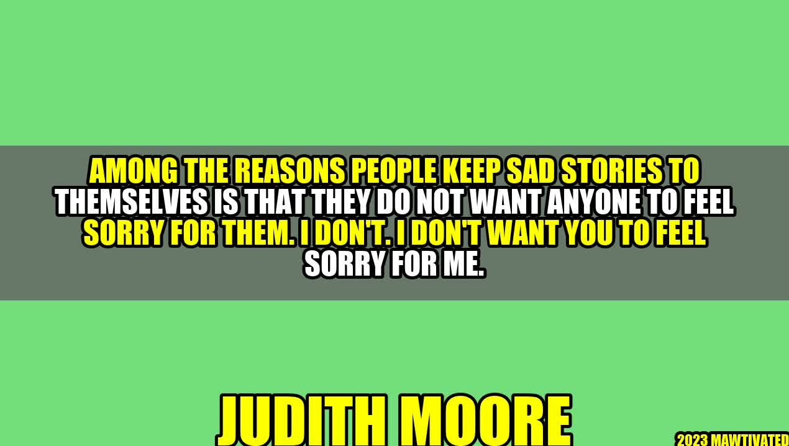

Not Looking For Sympathy: The Power of Sharing Sad Stories

Everybody has a sad story to tell. Whether it's a heartbreak, a health issue, a financial struggle, or a personal challenge, we all have moments in our lives that bring us down and make us feel vulnerable. And yet, many of us keep those stories to ourselves, not wanting to burden or worry anyone else. However, as author Judith Moore once said, "Among the reasons people keep sad stories to themselves is that they do not want anyone to feel sorry for them. I don't. I don't want you to feel sorry for me."
Judith Moore was a writer and editor, known for her raw and honest memoirs about her struggles with obesity, abuse, and addiction. She passed away in 2010, but her words still resonate with many people who have experienced pain and adversity. Moore's point is that sharing sad stories is not about seeking sympathy, but about finding connection, healing, and empowerment.
The Benefits of Sharing Sad Stories
So, why should we share sad stories? What good can come out of exposing our wounds and vulnerabilities? Here are some potential benefits:
Catharsis: Talking or writing about our pain can help us release pent-up emotions and feel a sense of relief and release. It can be a healthy way of expressing our feelings and letting go of negative energy.
Validation: Sharing our experiences with others can make us feel less alone and misunderstood. It can help us realize that we are not the only ones who have gone through difficult times, and that our feelings are valid and worthy of attention.
Growth: Reflecting on our struggles and what we have learned from them can help us grow and develop as individuals. It can give us a new perspective on life, and help us become more resilient, empathetic, and compassionate.
Inspiration: Sharing our sad stories can inspire others who may be going through similar challenges. It can show them that there is hope, that they are not alone, and that they too can overcome their obstacles.
"We delight in the beauty of the butterfly, but rarely admit the changes it has gone through to achieve that beauty." - Maya Angelou
Maya Angelou's quote reminds us that life is not always easy or picturesque. It takes struggle, sacrifice, and transformation to become the best version of ourselves. And yet, often, we only focus on the end result, the success, the beauty, without acknowledging the journey that led to it. By sharing sad stories, we can honor the messy, painful, and transformative moments that shape us and make us who we are.
How to Share Sad Stories Without Seeking Sympathy
Of course, there is a fine line between sharing sad stories and seeking sympathy. While we don't want to bottle up our emotions or pretend that everything is fine, we also don't want to burden or manipulate others into feeling sorry for us. So, how can we share sad stories in a healthy and respectful way? Here are some tips:
Be selective: Choose the right person or audience to share your story with. It's okay to be vulnerable, but it's also important to protect your privacy and emotional well-being. Choose someone you trust, who is supportive, empathetic, and non-judgmental.
Focus on the lesson: Instead of just venting or complaining, try to reflect on what you have learned from your experience. What insights, skills, or strengths did you gain? What do you want others to learn from your story?
Use "I" statements: Instead of blaming or accusing others for your misfortunes, focus on your own feelings and perceptions. Use "I" statements to express how you experienced the situation, and avoid generalizing or stereotyping.
Show gratitude: Even in the darkest moments of our lives, there is always something to be grateful for. Try to acknowledge the positive aspects of your experience, or the support you received from others. Showing gratitude can help you shift from victimhood to empowerment.
Conclusion
The key takeaways from this article are:
Sharing sad stories is not about seeking sympathy, but about finding connection, healing, and empowerment.
Sharing sad stories can have many benefits, such as catharsis, validation, growth, and inspiration.
To share sad stories in a healthy way, be selective, focus on the lesson, use "I" statements, and show gratitude.
Remember that your sad stories are not just sadness, but also strength, resilience, and courage. By sharing them, you can help yourself and others heal and grow.
Curated by Team Akash.Mittal.Blog
Share on Twitter Share on LinkedIn